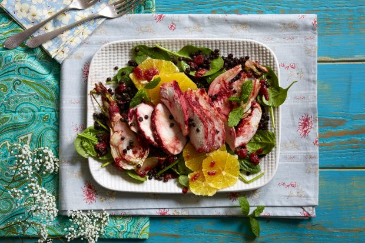

Beetroot chicken salad with fennel, orange
and lentils recipe

Serves:
Prep:
Cooking:
4
15 Min
25 Min
This beetroot chicken salad is bright, colourful and packed with flavour. Marinating the chicken in beetroot puree gives it a vivid colour as well as infusing it with flavour and making it really tender. We hate waste, so we’ve used the cooking juices and leftover marinade to dress this beetroot chicken salad. This healthy and balanced dish is perfect for those on a low carb diet, and is still filling enough to leave you feeling satisfied. Make sure you pare back the white pith from your oranges to avoid leaving them with a bitter flavour!
Ingredients
For The Marinade:
- Juice and zest of half an orange
- 300g fat-free natural Greek yogurt
For The Salad:
- 2 oranges (or blood oranges), peeled and sliced into rounds
Method
- Heat oven to 200C/Gas 6. Pierce the chicken breasts a few times with a sharp knife.
- To make the marinade, combine the beetroot with the rest of the dressing ingredients and blitz in a food processor. Coat the chicken in the marinade and leave for 30 mins.
- Drizle the fennel in oil and spread on a baking tray. Top with the marinated chicken breasts as well as the remaining marinade and bake in the oven for 25 mins.
- Meanwhile, microwave the lentils for 2 mins, or according to package instructions, then cool slightly.
- Remove the chicken from the cooking marinade and slice. Use the leftover cooked marinade as a dressing and toss through the salad with the cooked fennel, spinach and orange slices. Top with the sliced chicken breasts to serve.